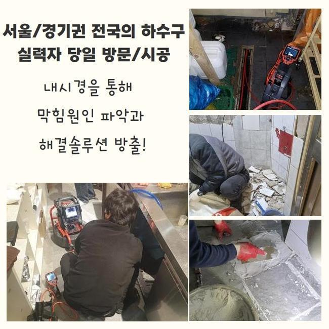
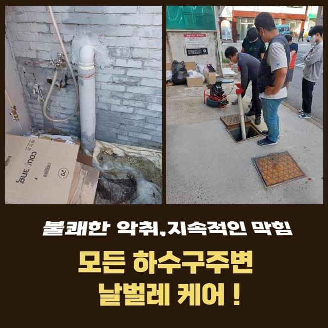
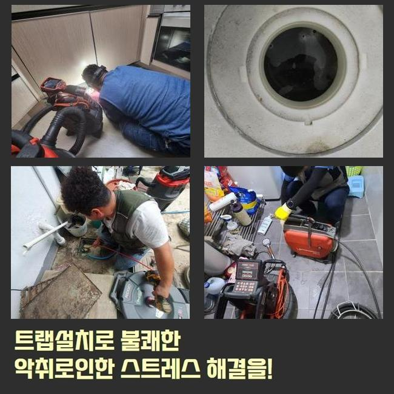
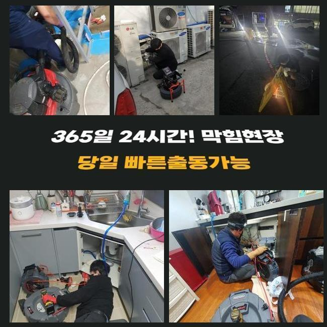
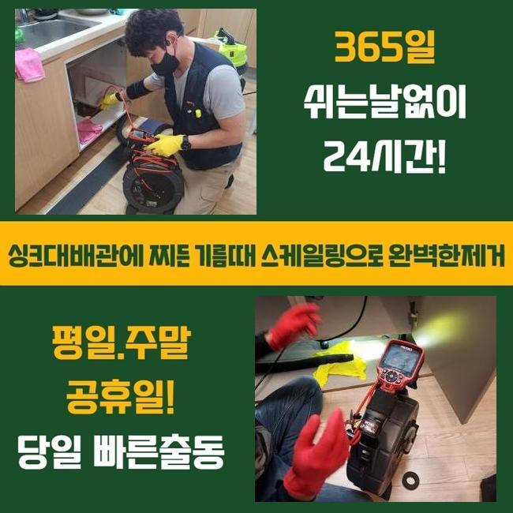
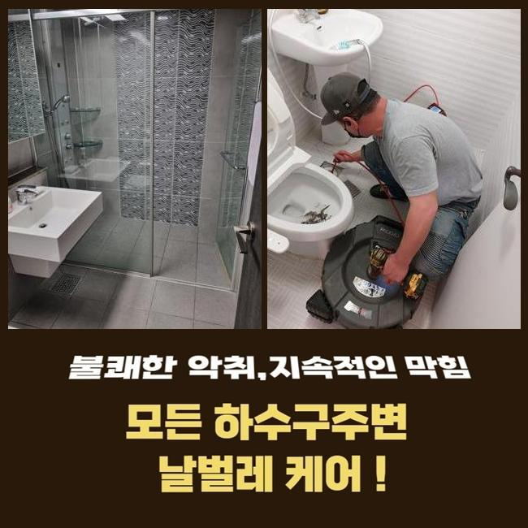
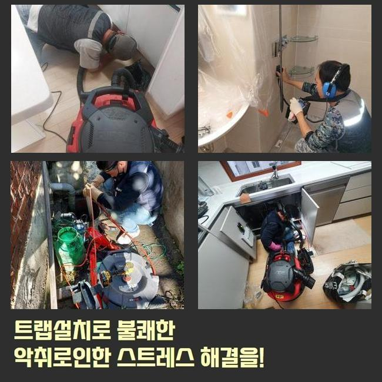

🏠 광주 주방하수도막힘 성남 씽크대막힘싱크케어
광주 싱크대막힘 전문 시공 후기

📋 작업 개요
- 위치: 광주
- 서비스 유형: 싱크대막힘, 하수구막힘, 배관막힘, 역류해결, 배관청소, 설비공사
- 작업 일시: 2024. 12. 4. 4:03
- 업체명: 하수구수사대 (010-5615-2118)
🔍 문제 상황
광주 주방하수도막힘 성남 씽크대막힘싱크케어
배수구 막힘사고는 주위에 악취등의 난처한 상황을 발생시키고 우리들의 일상을 방해하는 원인으로 영향을 줄 수도 있습니다
하수구에서 올라오는 썩는 듯한 냄새는 일반적으로 해결할 수 없으므로 최대한 빠른 시일내에 전문가의 점검들을 진행하여 정확한 이유를 확인하고 문제에 맞는 시공법을 정하는 과정이 중요합니다
하수설비가 고장나는 이유가 여러가지 있지만 일반적으로는 침전물이 배관을 막을만큼 적재되어 이상현상이 발생하곤 해요
어제 하수관 막힘사고로 저희에게 연락을 해주셨던 의뢰인분이 있었는데요
욕실에서 하수가 쉽게 일상생활이 어려우시다고 의뢰를 맡기셨습니다
고객님의 댁에 방문하여 파악해보니 의뢰인의 말씀처럼 화장실에서 물이 잘 내려가지 못하는 상황을 확인했어요
시공방법을 정하려면 무슨 이유로 인하여 막힘현상이 일어났는지 알아내는게 제일 중요해요
침전물로 막힌 위치들을 정확히 알아내기 위해서 내시경기를 투입해 지점을 파악하고 작업방향을 정합니다

🔎 원인 분석
💡 전문가 진단: 정밀 진단 장비를 사용하여 슬러지의 고착 여부를 판명하고 타격/세척 작업을 실시했습니다.
하수설비 속에 불순물이 꽤많은 경우라면 내시경장치를 투입해서 내부를 파악하기 어려운때도 종종 일어납니다
이럴땐 우선적으로 석션장비를 사용해서 이물질들을 청소한후에 본작업을 진행해요
이번에도 내시경장치가 투입될 수 있는 부위가 없다고 볼 수 있어서 우선 오염물질을 빨아들일수 있는 장치를 사용해 이후 작업이 가능 할 정도로 제거한 뒤에 시공에 들어갔습니다
하수관 막힘사고는 정확하게 원인들을 파악하고 안전하고 빠르게 해결을 할 수 있는 수리과정이 중요해요
이러한 문제점을 안전하게 처리하고 싶으시다면 전문가의 오래된 경험들과 노련함이 필요하고 규칙적인 사전검진과 깨끗하게 청소하며 예방을 위한 규칙을 지키는 것도 많은 도움이 돼요
흡입기로 파악해보니 샤워하며 나온 이물질이 기름기와 만나면서 기름침전물로 달라붙어 하수가 내려오지 않는 것이였어요
그렇기때문에 전문진의 노동력 소모가 높아 쉽지않은 시공이 이어지게 됩니다
계속되는 반복작업으로 이물질들을 제거하였고 배수관 속을 꽉 메운 노폐물을 최대치로 청소했습니다
장비등을 이용했지만 침전물이 달라붙어 나오지 않는 경우엔 범위가 큰 시공까지 고려해봐야해요

🔧 작업 과정
위의 작업으로 불가할 경우 이후에는 배관의 일부분을 들어내는 공사를 진행하여 배수라인의 면적을 넓혀서 작업하기도 해요
이런 시공법은 규모가 큰 공사로 진행되고 수습하는 과정들이 힘들고 복잡합니다
저희는 언제나 최대한 소규모로 시공하며 처리할 수 있도록 노력합니다
오늘은 최소로 작업을 진행 해보고자 반복적으로 불순물을 흡입하는 작업과정이 필요했기에 많은 시간이 소요되었어요
장시간의 작업 후에 침전물이 빠져나온걸 확인하고 내시경기를 활용해서 깔끔하게 노폐물이 배출된건지 최종확인을 합니다
마지막으로 노폐물이 없는것까지 완벽하게 체크해야 같은 문제들이 발생하지 않아요
하수설비에 이상이 생긴 경우에 일어나는 문제는 아주 다양해요
수리를 차일피일 미루셔서 역류사태가 계속적으로 발생한다면 연이은 사고들로 번지게 됩니다
그렇기때문에 비슷한 작업의 방향을 결정하려면 발견 즉시 전문 업체를 찾아보시기 바랍니다
저희 전문진은 고객님의 어려움을 처리하고 도움을 드릴 수 있게 준비하고 있고 전문기술을 갖추었으며 하수시스템의 모든 오류를 해결하겠습니다
저희 업체는 수리가 완료된후 사용자께서 쉽게 관리하시게끔 관리법이나 주의하실 내용들도 안내해드리고 있어요
전문 기술진의 예방차원의 검사도 필요하지만 사용하시는 분의 바른 습관이나 규칙적인 청소등은 이와같은 문제점을 미리 미리 예방할 수 있는 해결책이 됩니다
깨끗한 사용습관과 청결한 관리방법을 지키지 않는 경우엔 배수관 역류 현상과 같은 불편사항이 반복적으로 발생됩니다
그러므로 고객님들께서도 안전한 하수관 사용방법을 인지하시고 문제가 발생할 경우 즉각적으로 전문진에게 의뢰를 알아보시는 방법이 필요합니다


✅ 작업 완료
전희 전문 기술진은 신속정확한 해결방법을 통해서 고객의 문제들을 해결해 드리고자 합니다
하수관의 막힘사고 등의 불편사항을 해결해 드릴 뿐만 아니라, 의뢰인의 만족과 안전을 우선적으로 생각합니다
하수관 막힘사고로 생기는 의뢰인의 스트레스와 불편함에 공감을 하면서 조속하게 수리하고자 고객님께 긴급하게 달려갑니다
배수관 막힘문제로 불편사항이 있으시다면 지금 당장 전화주세요




⚠️ 주방 싱크대 배관 막힘 예방 수칙
- ✅ 기름기가 묻은 식기나 프라이팬은 설거지 전 키친타올로 반드시 기름때를 닦아내세요.
- ✅ 주기적으로 싱크대 개수대에 뜨거운 물을 가득 받아 한 번에 내려 배관 내부 기름을 씻어내세요.
- ✅ 배수구 거름망을 미세한 필터로 사용하시고 음식물 찌꺼기가 틈으로 새어 들지 않게 관리하세요.
- ✅ 베이킹소다와 식초를 뜨거운 물과 함께 일주일에 한 번씩 부어주면 배관 살균과 막힘 예방에 좋습니다.
💡 핵심 정리
- 확실한 장비 작업(내시경 점검 및 샤프트 스케일링)으로 원인을 뿌리 뽑습니다.
- 작업 후 1년 이내에 동일한 부위 재발 시 100% 무상 A/S 서비스를 보장합니다.
- 서울 · 경기 · 인천 전 지역에 24시간 언제든 긴급 출동할 수 있도록 항시 대기 중입니다.
❓ 자주 묻는 질문 (FAQ)
🚨 광주 싱크대막힘 문제로 고민이신가요?
정확한 원인 진단과 확실한 시공으로 재발 없는 해결을 약속드립니다.
24시간 긴급 출동 | 서울 · 경기 · 인천 전지역 | 1년 내 재발 시 무상 A/S